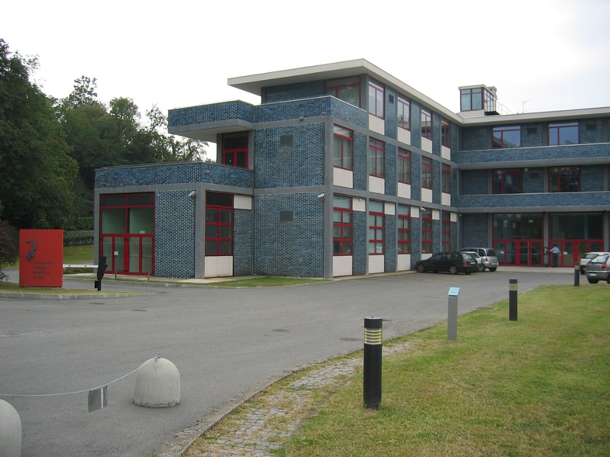
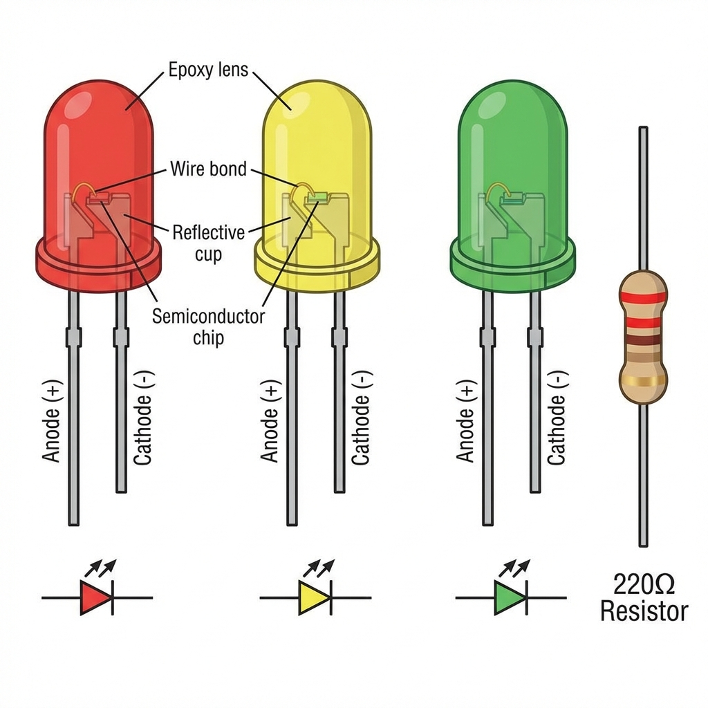

Puji syukur kami panjatkan ke hadirat Tuhan Yang Maha Esa atas rahmat dan hidayah-Nya sehingga modul
pembelajaran "Pembelajaran Mikrokontroler Arduino untuk Sistem Cerdas" ini dapat
diselesaikan dengan baik.
Modul ini disusun sebagai tugas akhir mata kuliah Kecerdasan Buatan (Artificial
Intelligence) pada Semester 5 Program Studi Teknologi Rekayasa Multimedia,
Politeknik
Dewantara. Penyusunan modul ini dilakukan di bawah bimbingan Ryan Alghazali Pakkaja, S.Kom.,
M.Kom. selaku Dosen Pengampu Mata Kuliah Kecerdasan Buatan.
Modul ini bertujuan untuk memperkenalkan konsep dasar Kecerdasan Buatan melalui implementasi praktis
menggunakan platform mikrokontroler Arduino. Materi yang disajikan dirancang untuk memberikan pemahaman
komprehensif mulai dari teori dasar hingga aplikasi nyata dalam bentuk project pembelajaran.
Penyusunan modul ini dilatarbelakangi oleh kebutuhan akan bahan ajar yang mengintegrasikan konsep AI dengan
pembelajaran hands-on menggunakan hardware yang terjangkau dan mudah dipelajari. Arduino dipilih sebagai
platform karena sifatnya yang open-source, didukung komunitas global yang besar, serta memiliki kurva
pembelajaran yang ramah bagi pemula.
Kami menyadari bahwa modul ini masih jauh dari sempurna. Oleh karena itu, kritik dan saran yang membangun
sangat kami harapkan untuk perbaikan di masa mendatang. Semoga modul ini dapat memberikan manfaat bagi para
pembaca dalam memahami dan mengimplementasikan sistem cerdas berbasis mikrokontroler.
Perkembangan teknologi Kecerdasan Buatan (Artificial Intelligence) telah mengalami evolusi signifikan dari
sistem berbasis cloud computing menuju implementasi pada perangkat edge (edge computing). Dalam konteks ini,
mikrokontroler seperti Arduino memegang peranan penting sebagai platform untuk mengimplementasikan sistem AI
tingkat dasar, khususnya dalam aplikasi Internet of Things (IoT), robotika, dan smart devices.
Arduino adalah platform elektronik open-source yang diciptakan pada tahun 2005 di
Interaction Design Institute Ivrea (IDII), Italia. Nama "Arduino" diambil dari nama sebuah
bar lokal di Ivrea bernama "Bar del Re Arduino", yang dinamai mengikuti nama Raja Arduin
dari Ivrea (1002-1015 M).
Gambar 1.1 — Arduino UNO R3, board paling populer dan menjadi standar industri sejak 2010.
(Sumber: Wikimedia Commons)
Latar Belakang Pendirian
Arduino dikembangkan sebagai solusi atas kebutuhan mahasiswa desain di IDII yang memerlukan alat prototyping
elektronik yang terjangkau. Sebelum Arduino, board mikrokontroler seperti BASIC Stamp dan
Wiring terlalu mahal (sekitar $100) untuk eksperimen mahasiswa. Tim pengembang Arduino
berhasil menciptakan board dengan harga sekitar $30, membuatnya dapat diakses oleh siapa
saja.
Proyek Arduino berakar dari Wiring, sebuah platform yang dikembangkan oleh Hernando Barragán
sebagai proyek thesis di IDII pada tahun 2003-2004. Tim Arduino kemudian menyederhanakan desain hardware
dengan menggunakan mikrokontroler ATmega8 untuk mengurangi biaya produksi.
Timeline Perkembangan Arduino
Berikut adalah timeline lengkap perkembangan Arduino dari awal hingga saat ini:
Tahun
Peristiwa
Keterangan
2000
IDII Didirikan
Interaction Design Institute Ivrea didirikan oleh Telecom Italia dan Olivetti di bekas pabrik
Olivetti, Ivrea.
2003
Proyek Wiring
Hernando Barragán memulai Wiring project sebagai thesis di IDII, menjadi fondasi awal Arduino.
2005
Arduino Lahir
Board Arduino pertama dirilis di IDII dengan mikrokontroler ATmega8. Batch pertama diproduksi dengan
dana sekitar 3.000 Euro.
2008
Arduino Nano
Versi compact untuk proyek embedded yang membutuhkan ukuran kecil.
2009
Arduino Mega
Menggunakan ATmega2560 dengan lebih banyak pin I/O untuk proyek kompleks.
2010
Arduino UNO
Flagship board dengan ATmega328P, menjadi standar industri dan referensi untuk tutorial.
2012
Arduino Leonardo
Menggunakan ATmega32u4 dengan native USB HID support.
2014
Arduino Zero
Board pertama dengan ARM Cortex-M0+ (SAMD21) untuk debugging lanjutan.
2015
Trademark Dispute
Perselisihan antara Arduino LLC dan Arduino SRL mengenai merek dagang, menyebabkan fragmentasi
sementara.
2017
Arduino Holding
Kedua entitas bergabung kembali membentuk Arduino Holding di bawah kepemimpinan Massimo Banzi.
2020
Arduino Nano 33 BLE Sense
Board dengan dukungan TinyML (TensorFlow Lite) untuk aplikasi machine learning pada edge device.
2022-2024
Nicla Series
Board AI-focused dengan kamera dan sensor untuk edge computing dan computer vision.
Pencapaian Arduino
Hingga tahun 2024, Arduino telah mencapai tonggak penting: lebih dari 20 juta board
terjual, digunakan di 200+ negara, dengan 28+ juta pengguna aktif.
Platform ini telah digunakan dalam berbagai proyek, mulai dari LED sederhana hingga NASA
CubeSats (satelit kecil).
1.2 Pendiri Arduino
Arduino dikembangkan oleh tim yang terdiri dari lima orang dengan latar belakang berbeda:
Massimo Banzi
Co-Founder & Visioner Utama
Professor di IDII Ivrea, penulis "Getting Started with Arduino". Wajah publik Arduino.
David Cuartielles
Hardware Engineer
Profesor di Malmö University, Swedia. Ahli hardware design dan electronic prototyping.
Tom Igoe
Professor & Co-Founder
Professor NYU ITP, ahli physical computing, penulis "Physical Computing".
Pencipta Arduino IDE dan bahasa pemrograman Arduino. Lulusan MIT Media Lab.
1.3 Perusahaan Arduino

Gambar 1.1 — Interaction Design Institute Ivrea (IDII), Italia (2001-2005) Sumber:
Wikimedia Commons
Arduino didirikan tahun 2005 di Interaction Design Institute Ivrea (IDII), Italia, untuk
membantu mahasiswa desain membuat prototipe interaktif.
Struktur Perusahaan
Arduino LLC — Berbasis di AS, mengelola merek & IP
Arduino SRL — Berbasis di Italia, manufaktur & distribusi
Arduino Holding — Entitas gabungan sejak 2017, CEO Fabio Violante
Kantor pusat di Toolbox Coworking, Turin (bekas pabrik FIAT), juga berfungsi sebagai
Officine Arduino Torino (makerspace).
Pencapaian: 30+ juta board terjual, 200+ negara, 28+ juta pengguna, platform pendidikan
di ribuan sekolah.
1.4 Pengertian Menurut Para Ahli
"Arduino is an open-source electronics platform based on easy-to-use hardware and software. It's
intended for anyone making interactive projects." — Arduino.cc Official Definition (2024)
"Arduino represents a paradigm shift in embedded systems education, democratizing access to
microcontroller technology through its simplified programming environment and affordable hardware."
— Monk, S. (2016). Programming Arduino: Getting Started with Sketches.
McGraw-Hill Education
Definisi Mikrokontroler
Menurut Prof. Peter Marwedel (2021) dari TU Dortmund University:
"A microcontroller is a small computer on a single integrated circuit containing a processor core,
memory, and programmable input/output peripherals, designed for embedded applications that require
real-time computing with low power consumption."
1.5 Hubungan Arduino dengan AI
"Intelligent agents must be able to perceive their environment, reason about what they perceive, and
take actions that affect that environment. The sense-plan-act paradigm is fundamental to understanding
how AI systems interact with the physical world."
— Russell, S., & Norvig, P. (2020). Artificial Intelligence: A Modern
Approach. 4th Edition
Arduino menyediakan infrastruktur hardware yang memungkinkan implementasi ketiga aspek AI:
Aspek AI
Implementasi Arduino
Komponen
Perception
Pengumpulan data dari lingkungan
Sensor (ultrasonik, LDR, PIR, suhu)
Reasoning
Pemrosesan logika & algoritma
ATmega328P Microcontroller
Action
Eksekusi respons fisik
Aktuator (LED, motor, buzzer, relay)
1.6 Tujuan Pembelajaran
Memahami konsep dasar mikrokontroler Arduino dan pemrogramannya
Mengenal berbagai komponen input dan output dalam sistem embedded
Mengimplementasikan logika kontrol dan decision making
Membangun project terintegrasi dengan multiple sensors dan actuators
Memahami hubungan antara sistem embedded dengan kecerdasan buatan
1.7 Tokoh Pionir AI & IoT
Berikut adalah tokoh-tokoh penting yang karyanya menjadi landasan pengembangan IoT dan AI:
Marvin Minsky
Co-founder MIT AI Lab. Bapak AI Modern.
Rodney Brooks
Behavior-based Robotics. iRobot Founder.
Rosalind Picard
Pionir Affective Computing MIT.
Richard Sutton
Bapak Reinforcement Learning.
Pete Warden
Penulis TinyML, Google AI Alumni.
Neil Gershenfeld
Founder Fab Labs (MIT CBA).
BAB II — DASAR-DASAR ARDUINO
2.1 Pengertian Arduino
Arduino adalah platform elektronik open-source yang terdiri dari papan sirkuit (hardware) dan software
development environment (IDE). Arduino UNO, yang digunakan dalam modul ini, menggunakan mikrokontroler
ATmega328P.
Mengapa Arduino Populer untuk Pemula?
• Mudah dipelajari — Bahasa pemrograman sederhana berbasis C/C++
• Komunitas besar — Banyak tutorial dan forum bantuan
• Harga terjangkau — Board mulai dari Rp 50.000-an
• Open-source — Desain bebas dimodifikasi dan dikembangkan
Program Arduino ditulis menggunakan bahasa C/C++ yang disederhanakan. Program Arduino
disebut "Sketch" dan memiliki ekstensi .ino.
2.2.1 Struktur Dasar Program Arduino
Setiap program Arduino WAJIB memiliki dua fungsi utama:
// STRUKTUR DASAR PROGRAM ARDUINO
void setup() {
// DIJALANKAN SEKALI saat Arduino dinyalakan/reset
// Gunakan untuk: inisialisasi pin, sensor, Serial
}
void loop() {
// DIJALANKAN BERULANG-ULANG selamanya
// Gunakan untuk: logika utama program
}
2.2.2 Contoh Program: LED Berkedip (Blink)
// PROGRAM: LED BLINK (Berkedip)
// Fungsi: Menyalakan LED selama 1 detik, mati 1 detik
int ledPin = 13; // Simpan nomor pin LED
void setup() {
pinMode(ledPin, OUTPUT); // Set pin 13 sebagai OUTPUT
}
void loop() {
digitalWrite(ledPin, HIGH); // Nyalakan LED (beri tegangan)
delay(1000); // Tunggu 1000ms (1 detik)
digitalWrite(ledPin, LOW); // Matikan LED (putus tegangan)
delay(1000); // Tunggu 1 detik lagi
}
2.3 Daftar Fungsi Arduino Penting
Fungsi Digital I/O
Fungsi
Deskripsi
Contoh
pinMode(pin, mode)
Set mode pin: INPUT, OUTPUT, INPUT_PULLUP
pinMode(13, OUTPUT);
digitalWrite(pin, value)
Tulis HIGH (5V) atau LOW (0V) ke pin
digitalWrite(13, HIGH);
digitalRead(pin)
Baca status pin (HIGH atau LOW)
int s = digitalRead(2);
Fungsi Analog I/O
Fungsi
Deskripsi
Contoh
analogRead(pin)
Baca nilai analog (0-1023) dari pin A0-A5
int nilai = analogRead(A0);
analogWrite(pin, value)
PWM output (0-255) untuk kontrol kecerahan
analogWrite(9, 128);
2.4 Tipe Data dalam Arduino
Tipe
Ukuran
Rentang Nilai
Contoh
int
2 byte
-32,768 s/d 32,767
int suhu = 25;
long
4 byte
-2 miliar s/d 2 miliar
long waktu = 3600000;
float
4 byte
Desimal (±3.4e38)
float volt = 4.75;
boolean
1 byte
true atau false
boolean aktif = true;
2.5 Komunikasi Serial (Debugging)
Serial Monitor digunakan untuk debugging — melihat output program di komputer.
void setup() {
Serial.begin(9600); // Mulai komunikasi serial
Serial.println("Arduino siap!"); // Cetak teks
}
void loop() {
int nilai = analogRead(A0); // Baca sensor
Serial.print("Nilai sensor: ");
Serial.println(nilai); // Tampilkan nilai
delay(500);
}
Tips Debugging
• Buka Serial Monitor: Tools → Serial Monitor atau Ctrl+Shift+M
• Pastikan baud rate sama (biasanya 9600)
• Gunakan Serial.println() untuk cek nilai variabel
BAB III — KOMPONEN-KOMPONEN ARDUINO
3.1 Komponen Output & Display

Light Emitting Diode (LED)
1. LED (Light Emitting Diode)
Deskripsi: Komponen elektronika yang memancarkan cahaya saat dialiri arus listrik.
Memiliki kutub Anoda (+) dan Katoda (-).
Fungsi: Sebagai indikator visual atau pencahayaan sederhana.
Contoh Pemakaian: Lampu lalu lintas, indikator power, dekorasi.
#include <Servo.h>
myservo.write(90); // Posisi 90 derajat
BAB IV — PROJECT PEMBELAJARAN
4.1 Project 1: Running LED + Lagu Selamat Ulang Tahun
Deskripsi Project
5 LED menyala bergantian sambil buzzer memainkan lagu "Happy Birthday". Project ini mendemonstrasikan
penggunaan array, iterasi loop, dan fungsi tone().
Komponen yang Dibutuhkan
Komponen
Jumlah
Keterangan
Arduino UNO
1
Mikrokontroler utama
LED
5
Warna bebas (merah, kuning, hijau)
Resistor 220Ω
5
Pembatas arus untuk LED
Buzzer Piezoelektrik
1
Aktif buzzer untuk melodi
Breadboard + Jumper
1 set
Papan rangkaian
Kode Program (Tested & Working)
/*
* PROJECT: Running LED + Lagu "Selamat Ulang Tahun"
* LED 1-5 -> Pin 8, 9, 10, 11, 12
* Buzzer (+) -> Pin 7 (LANGSUNG tanpa resistor)
*/
int ledPins[] = {8, 9, 10, 11, 12};
int jumlahLED = 5;
int buzzerPin = 7;
// Nada musik (Hz) - Oktaf Tinggi
#define NOTE_C4 523
#define NOTE_D4 587
#define NOTE_E4 659
#define NOTE_F4 698
#define NOTE_G4 784
void setup() {
for (int i = 0; i < jumlahLED; i++) {
pinMode(ledPins[i], OUTPUT);
}
pinMode(buzzerPin, OUTPUT);
}
void loop() {
playHappyBirthday();
delay(3000);
}
4.2 Project 2: Sistem Deteksi Jarak (Sensor Parkir)
Deskripsi Project
Sistem deteksi jarak dengan 4 tingkat peringatan. LED dan buzzer berubah intensitas sesuai jarak objek -
mirip sensor parkir mobil.
Tabel Respons 4 Tingkat
Jarak
LED
Buzzer
Status
> 50 cm
[*][ ][ ][ ]
Beep pelan
AMAN
30-50 cm
[*][*][ ][ ]
Beep sedang
HATI-HATI
10-30 cm
[*][*][*][ ]
Beep cepat
PERINGATAN
< 10 cm
[*][*][*][*]
ALARM KERAS
BAHAYA!!!
Kode Program Sensor Parkir
/*
* PROJECT: ALARM SENSOR GERAKAN + 4 LED INDIKATOR
* Sensor: TRIG=Pin5, ECHO=Pin6
* LED: Pin 8,9,10,11 | Buzzer: Pin 13
*/
const int trigPin = 5;
const int echoPin = 6;
const int led1Pin = 8; // Hijau
const int led2Pin = 9; // Kuning
const int led3Pin = 10; // Orange
const int led4Pin = 11; // Merah
const int buzzerPin = 13;
void setup() {
pinMode(trigPin, OUTPUT);
pinMode(echoPin, INPUT);
pinMode(led1Pin, OUTPUT);
pinMode(led2Pin, OUTPUT);
pinMode(led3Pin, OUTPUT);
pinMode(led4Pin, OUTPUT);
pinMode(buzzerPin, OUTPUT);
Serial.begin(9600);
}
void loop() {
int distance = measureDistance();
if (distance > 50) {
// AMAN - LED 1 saja
digitalWrite(led1Pin, HIGH);
digitalWrite(led2Pin, LOW);
tone(buzzerPin, 500, 100);
delay(1000);
}
else if (distance > 10) {
// PERINGATAN - LED 1,2,3
digitalWrite(led1Pin, HIGH);
digitalWrite(led2Pin, HIGH);
digitalWrite(led3Pin, HIGH);
tone(buzzerPin, 1500, 200);
delay(300);
}
else {
// BAHAYA - Semua LED + alarm
for (int i = 0; i < 5; i++) {
digitalWrite(led4Pin, HIGH);
tone(buzzerPin, 2500);
delay(50);
noTone(buzzerPin);
delay(50);
}
}
}
4.3 Project 3: Kontrol Motor Servo
Deskripsi Project
Motor servo bergerak dari 0° ke 90° ke 180° secara berulang. Project ini mendemonstrasikan penggunaan
library Servo.
/*
* PROGRAM TEST SERVO SEDERHANA
* Koneksi: Kabel Kuning -> Pin 4, Merah -> 5V, Coklat -> GND
*/
#include
Servo myServo;
void setup() {
myServo.attach(4);
}
void loop() {
myServo.write(0); // Posisi awal
delay(1000);
myServo.write(90); // Posisi tengah
delay(1000);
myServo.write(180); // Posisi akhir
delay(1000);
}
4.4 Project 4: Smart Home Lighting (Relay + LDR)
/*
* PROJECT: Button dengan LED
* LED -> Pin 2 (dengan resistor 220Ω)
* Button -> Pin 3 (ke GND)
*/
const int pinLED = 2;
const int pinButton = 3;
void setup() {
pinMode(pinLED, OUTPUT);
pinMode(pinButton, INPUT_PULLUP);
}
void loop() {
int statusButton = digitalRead(pinButton);
if (statusButton == LOW) {
digitalWrite(pinLED, HIGH); // LED Menyala
} else {
digitalWrite(pinLED, LOW); // LED Mati
}
}
BAB V — PENUTUP
5.1 Kesimpulan
Berdasarkan pembahasan dalam modul ini, dapat disimpulkan beberapa hal penting:
Arduino sebagai Platform Pembelajaran AI: Arduino merupakan platform ideal untuk
mempelajari konsep dasar Kecerdasan Buatan karena sifatnya yang open-source, terjangkau, dan didukung
komunitas global.
Integrasi Hardware dan Software: Pemrograman mikrokontroler Arduino memungkinkan
pemahaman hubungan antara kode program dengan respons hardware melalui sensor dan aktuator.
Implementasi Sistem Cerdas: Project-project seperti sensor parkir, running LED, servo
motor, dan button control mengimplementasikan logika pengambilan keputusan dasar sistem AI.
Keterampilan Praktis: Modul ini membekali keterampilan praktis dalam merangkai komponen
elektronik, debugging, dan pemahaman prinsip kerja mikrokontroler.
Fondasi Pengembangan Lanjutan: Pengetahuan ini menjadi fondasi untuk mempelajari topik
AI lebih kompleks seperti Machine Learning, Computer Vision, dan IoT.
5.2 Saran
Untuk pengembangan lebih lanjut dari modul dan penerapan pembelajaran ini, disarankan:
Eksplorasi Sensor Tambahan: Bereksperimen dengan sensor lain seperti DHT11
(suhu/kelembaban), MQ-2 (gas), atau sensor warna.
Integrasi Platform IoT: Integrasikan project Arduino dengan Blynk, ThingSpeak, atau
MQTT untuk monitoring jarak jauh.
Penerapan Machine Learning: Gunakan Arduino Nano 33 BLE Sense dengan TensorFlow Lite
untuk model ML sederhana.
Dokumentasi Project: Dokumentasikan setiap project dalam bentuk laporan atau video
tutorial.
Kolaborasi Tim: Kerjakan project dalam tim untuk mengembangkan kemampuan kolaborasi dan
problem-solving.
Pesan Penutup
Pembelajaran mikrokontroler Arduino adalah langkah awal yang sangat baik untuk memahami dunia embedded
systems dan AI. Teruslah bereksperimen, jangan takut gagal, dan selalu dokumentasikan setiap
pembelajaran. Selamat berkarya!
DAFTAR PUSTAKA
Banzi, M., & Shiloh, M. (2014). Getting Started with Arduino (3rd ed.). O'Reilly Media.
Brooks, R. A. (1991). Intelligence without representation. Artificial Intelligence, 47(1-3),
139-159. [MIT Artificial Intelligence Laboratory]
Gershenfeld, N. (2005). Fab: The Coming Revolution on Your Desktop. Basic Books. [MIT Center for
Bits and Atoms]
Igoe, T., & O'Sullivan, D. (2004). Physical Computing: Sensing and Controlling the Physical World
with Computers. Course Technology. [MIT Media Lab / NYU ITP]
Monk, S. (2016). Programming Arduino: Getting Started with Sketches (2nd ed.). McGraw-Hill
Education.
Russell, S., & Norvig, P. (2020). Artificial Intelligence: A Modern Approach (4th ed.). Pearson.
[UC Berkeley / Google]
Sutton, R. S., & Barto, A. G. (2018). Reinforcement Learning: An Introduction (2nd ed.). MIT
Press.
Warden, P., & Situnayake, D. (2019). TinyML: Machine Learning with TensorFlow Lite on Arduino and
Ultra-Low-Power Microcontrollers. O'Reilly Media.